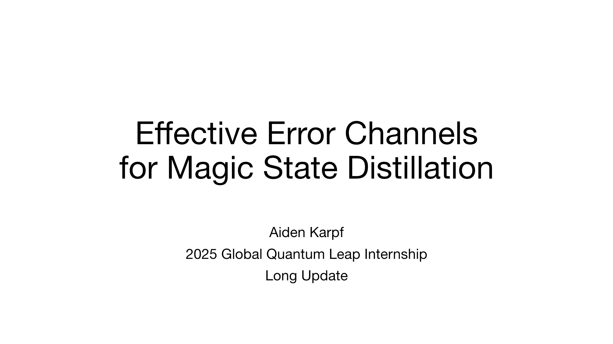

Presentation - 131 slides
a research project working towards defining effective error channels for an important quantum circuit scheme. research conducted as a 2025 global quantum leap fellow.

Slide 1 of 131